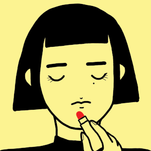
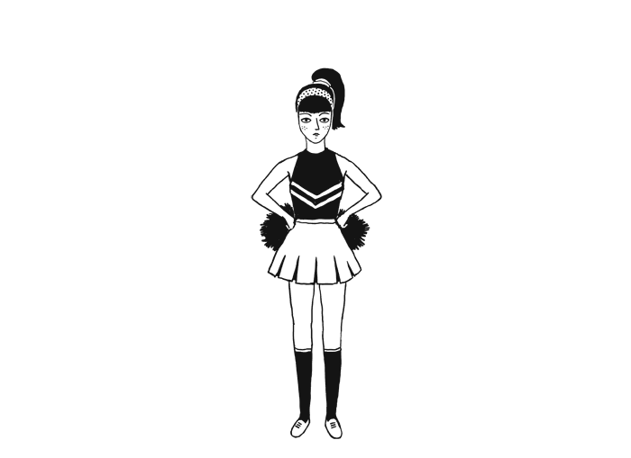
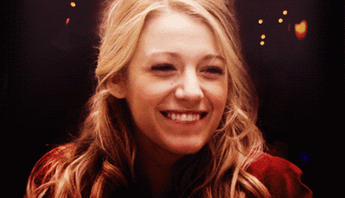

我们现在看到一个人行为习惯很差
或者穿的很落伍，不合时宜，不修边幅
我们就会说：啧，你看它，好low啊！
后来才知道，外国人根本不这么说
他们一般不会用low形容别人的品味差
可以用：You have a terrible taste.
来表示：你可真没品！
那么还有哪些我们平时动不动就挂在嘴边，但其实错得很离谱的英文表达呢？一起来看看~
太男人了
You are man ✘
错误原因：Man是名词，此处要使用形容词Manly
manly [ˈmænli] adj.有男子气概的
I'm afraid his manly charms are starting to fade.
我担心他的男性魅力已经开始凋谢了。
你很时尚
You are fashion ✘
错误原因：Fashion是名词，此处要使用形容词Fashionable.
fashionable [ˈfæʃnəbl] adj. 流行的; 时髦的，符合时尚的
Our clothes are lightweight, fashionable, practical for holidays.
我们的服装轻便、时尚，并且很适合度假时穿。
谁在乎？
Who care？ ✘
错误原因：Who在这里泛指任何人相当于anyone。 意思是:谁会在乎呢? 实际是反问句，本意是没有人会在乎。应该用 who cares？
"Any idea who is going to be here this weekend?"
"No. Still, who cares?"
“知道这个周末谁要来吗？”——“不知道。不过，管他呢。”
没有为什么
No why ✘
错误原因：中式英文直接翻译，应该用No reason。
There is no reason to be pessimistic about the future.
根本没有理由对未来悲观。
参加考试
join an exam ✘
错误原因：应该用 take an exam。
I am about to take an exam in October.
我十月份要参加一个考试。
吃药
eat medicine ✘
错误原因：应该用 take medicine。
She has to rest and take medicine twice a day.
她需要休息，并且每天吃两次药。
金发
golden hair ✘
错误原因：应该用blond hair。
A yellow blouse goes with her blond hair.
黄色短上衣和她的金黄色头发很相称。
